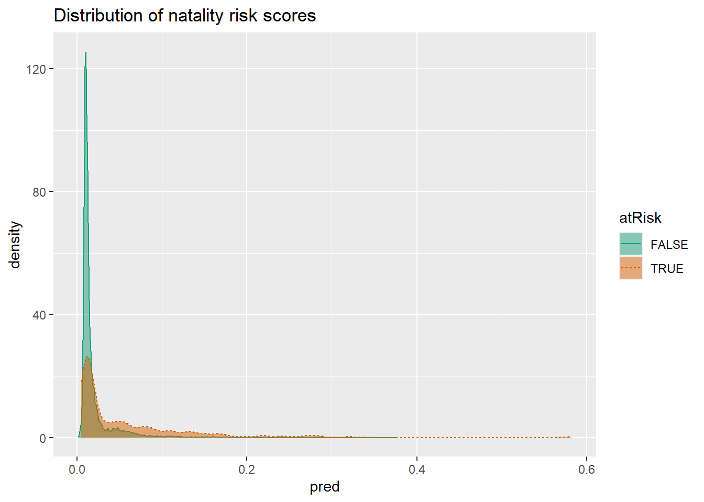

Linear regression is the most popular method of analysis for statisticians, economists and data scientists. In this chapter, we will go over the basic of linear and logistic regression: how to define it, how to interpret the results and diagnostics. It is the best first method to be tried when we try to predict some numerical quantity and understand the relationship between the input (independent) variables and the output (dependent) variable. Logistic regressions are very useful when we try to predict probabilities and understand what “determines” these probabilities.
As explained in more detailed in Chapter 2 of Introductory Econometrics, a linear regression can be explained by a simple additive equation.
\[ y = \beta_1 x_1 + \beta_2 x_2 + e\]
\(y\) is the numeric quantity you want to predict, while \(x_1\) and \(x_2\) are the independent variables. Variation in independent variables will help us explain variation in the dependent variable. \(beta_1\) and \(\beta_2\) are coefficients that we are looking for.
The first step is to create a linear model. In R, we use base command lm(y~x1+x2) to do so. Let’s say we are interested in understanding/predicting wage based on age, sex, employment class and education. Using psub.RDS data, run the following commands.
psub <- readRDS("R_data_files/psub.RDS")
set.seed(3454351)
gp <- runif(nrow(psub))
dtrain <- subset(psub,gp >= 0.5)
dtest <- subset(psub,gp < 0.5)
model <- lm(log10(PINCP) ~ AGEP + SEX + COW + SCHL,data=dtrain)
summary(model)##
## Call:
## lm(formula = log10(PINCP) ~ AGEP + SEX + COW + SCHL, data = dtrain)
##
## Residuals:
## Min 1Q Median 3Q Max
## -1.5038 -0.1354 0.0187 0.1710 0.9741
##
## Coefficients:
## Estimate Std. Error t value Pr(>|t|)
## (Intercept) 4.0058856 0.0144265 277.676 < 2e-16 ***
## AGEP 0.0115985 0.0003032 38.259 < 2e-16 ***
## SEXFemale -0.1076883 0.0052567 -20.486 < 2e-16 ***
## COWFederal government employee 0.0638672 0.0157521 4.055 5.06e-05 ***
## COWLocal government employee -0.0297093 0.0107370 -2.767 0.005667 **
## COWPrivate not-for-profit employee -0.0330196 0.0102449 -3.223 0.001272 **
## COWSelf employed incorporated 0.0145475 0.0164742 0.883 0.377232
## COWSelf employed not incorporated -0.1282285 0.0134708 -9.519 < 2e-16 ***
## COWState government employee -0.0479571 0.0123275 -3.890 0.000101 ***
## SCHLRegular high school diploma 0.1135386 0.0107236 10.588 < 2e-16 ***
## SCHLGED or alternative credential 0.1216670 0.0173038 7.031 2.17e-12 ***
## SCHLsome college credit, no degree 0.1838278 0.0106461 17.267 < 2e-16 ***
## SCHLAssociate's degree 0.2387045 0.0123568 19.318 < 2e-16 ***
## SCHLBachelor's degree 0.3637114 0.0105810 34.374 < 2e-16 ***
## SCHLMaster's degree 0.4445777 0.0127100 34.978 < 2e-16 ***
## SCHLProfessional degree 0.5111167 0.0201800 25.328 < 2e-16 ***
## SCHLDoctorate degree 0.4818700 0.0245162 19.655 < 2e-16 ***
## ---
## Signif. codes: 0 '***' 0.001 '**' 0.01 '*' 0.05 '.' 0.1 ' ' 1
##
## Residual standard error: 0.2688 on 11186 degrees of freedom
## Multiple R-squared: 0.2976, Adjusted R-squared: 0.2966
## F-statistic: 296.2 on 16 and 11186 DF, p-value: < 2.2e-16dtest$predLogPINCP <- predict(model,newdata=dtest)
dtrain$predLogPINCP <- predict(model,newdata=dtrain)The results can be viewed using the summary() command.
summary(model)##
## Call:
## lm(formula = log10(PINCP) ~ AGEP + SEX + COW + SCHL, data = dtrain)
##
## Residuals:
## Min 1Q Median 3Q Max
## -1.5038 -0.1354 0.0187 0.1710 0.9741
##
## Coefficients:
## Estimate Std. Error t value Pr(>|t|)
## (Intercept) 4.0058856 0.0144265 277.676 < 2e-16 ***
## AGEP 0.0115985 0.0003032 38.259 < 2e-16 ***
## SEXFemale -0.1076883 0.0052567 -20.486 < 2e-16 ***
## COWFederal government employee 0.0638672 0.0157521 4.055 5.06e-05 ***
## COWLocal government employee -0.0297093 0.0107370 -2.767 0.005667 **
## COWPrivate not-for-profit employee -0.0330196 0.0102449 -3.223 0.001272 **
## COWSelf employed incorporated 0.0145475 0.0164742 0.883 0.377232
## COWSelf employed not incorporated -0.1282285 0.0134708 -9.519 < 2e-16 ***
## COWState government employee -0.0479571 0.0123275 -3.890 0.000101 ***
## SCHLRegular high school diploma 0.1135386 0.0107236 10.588 < 2e-16 ***
## SCHLGED or alternative credential 0.1216670 0.0173038 7.031 2.17e-12 ***
## SCHLsome college credit, no degree 0.1838278 0.0106461 17.267 < 2e-16 ***
## SCHLAssociate's degree 0.2387045 0.0123568 19.318 < 2e-16 ***
## SCHLBachelor's degree 0.3637114 0.0105810 34.374 < 2e-16 ***
## SCHLMaster's degree 0.4445777 0.0127100 34.978 < 2e-16 ***
## SCHLProfessional degree 0.5111167 0.0201800 25.328 < 2e-16 ***
## SCHLDoctorate degree 0.4818700 0.0245162 19.655 < 2e-16 ***
## ---
## Signif. codes: 0 '***' 0.001 '**' 0.01 '*' 0.05 '.' 0.1 ' ' 1
##
## Residual standard error: 0.2688 on 11186 degrees of freedom
## Multiple R-squared: 0.2976, Adjusted R-squared: 0.2966
## F-statistic: 296.2 on 16 and 11186 DF, p-value: < 2.2e-16To make predictions based on our model, we can use command predict(). Let’s do that both on the training and test data sets.
dtest$predLogPINCP <- predict(model,newdata=dtest)
dtrain$predLogPINCP <- predict(model,newdata=dtrain)One good way to inspect the results is using a figure. Using ggplot2, let’s examine how the prediction line hold against the actual values. We can also view the residual errors showing how far our predictions are from the actual values.
library('ggplot2')
ggplot(data = dtest, aes(x = predLogPINCP, y = log10(PINCP))) +
geom_point(alpha = 0.2,color = "darkgray") +
geom_smooth(color="darkblue") +
geom_line(aes(x = log10(PINCP),
y = log10(PINCP)),
color = "blue", linetype=2) +
coord_cartesian(xlim = c(4,5.25),
ylim = c(c(3.5,5.5)))ggplot(data=dtest,aes(x = predLogPINCP,
y = predLogPINCP - log10(PINCP) )) +
geom_point(alpha=0.2,color="darkgray") +
geom_smooth(color="darkblue") +
ylab("residual error (prediction - actual)")To evaluate the model in terms of quality of the predictions, we can check R-squared and RMSE. High R-squared means that a high fraction of variation in the dependent variable (y) is explained by variation in the independent variables. We would want the R-squared to be similar in predictions based on the training and test data. They are!
rsq <- function(y,f) { 1 - sum((y-f)^2)/sum((y-mean(y))^2) }
rsq(log10(dtrain$PINCP), dtrain$predLogPINCP)## [1] 0.2976165rsq(log10(dtest$PINCP), dtest$predLogPINCP)## [1] 0.2911965# Alternative
sum_model=summary(model)
sum_model$r.squared## [1] 0.2976165RMSE or root mean squared error is another useful measure. It shows the width of the data “cloud” around the line of perfect prediction.
rmse <- function(y, f) { sqrt(mean( (y-f)^2 )) }
rmse(log10(dtrain$PINCP), dtrain$predLogPINCP)## [1] 0.2685855rmse(log10(dtest$PINCP), dtest$predLogPINCP)## [1] 0.2675129To examine coefficients of the model, you can either run the summary() or the coefficients() command.
summary(model)##
## Call:
## lm(formula = log10(PINCP) ~ AGEP + SEX + COW + SCHL, data = dtrain)
##
## Residuals:
## Min 1Q Median 3Q Max
## -1.5038 -0.1354 0.0187 0.1710 0.9741
##
## Coefficients:
## Estimate Std. Error t value Pr(>|t|)
## (Intercept) 4.0058856 0.0144265 277.676 < 2e-16 ***
## AGEP 0.0115985 0.0003032 38.259 < 2e-16 ***
## SEXFemale -0.1076883 0.0052567 -20.486 < 2e-16 ***
## COWFederal government employee 0.0638672 0.0157521 4.055 5.06e-05 ***
## COWLocal government employee -0.0297093 0.0107370 -2.767 0.005667 **
## COWPrivate not-for-profit employee -0.0330196 0.0102449 -3.223 0.001272 **
## COWSelf employed incorporated 0.0145475 0.0164742 0.883 0.377232
## COWSelf employed not incorporated -0.1282285 0.0134708 -9.519 < 2e-16 ***
## COWState government employee -0.0479571 0.0123275 -3.890 0.000101 ***
## SCHLRegular high school diploma 0.1135386 0.0107236 10.588 < 2e-16 ***
## SCHLGED or alternative credential 0.1216670 0.0173038 7.031 2.17e-12 ***
## SCHLsome college credit, no degree 0.1838278 0.0106461 17.267 < 2e-16 ***
## SCHLAssociate's degree 0.2387045 0.0123568 19.318 < 2e-16 ***
## SCHLBachelor's degree 0.3637114 0.0105810 34.374 < 2e-16 ***
## SCHLMaster's degree 0.4445777 0.0127100 34.978 < 2e-16 ***
## SCHLProfessional degree 0.5111167 0.0201800 25.328 < 2e-16 ***
## SCHLDoctorate degree 0.4818700 0.0245162 19.655 < 2e-16 ***
## ---
## Signif. codes: 0 '***' 0.001 '**' 0.01 '*' 0.05 '.' 0.1 ' ' 1
##
## Residual standard error: 0.2688 on 11186 degrees of freedom
## Multiple R-squared: 0.2976, Adjusted R-squared: 0.2966
## F-statistic: 296.2 on 16 and 11186 DF, p-value: < 2.2e-16coefficients(model)## (Intercept) AGEP
## 4.00588563 0.01159846
## SEXFemale COWFederal government employee
## -0.10768834 0.06386719
## COWLocal government employee COWPrivate not-for-profit employee
## -0.02970932 -0.03301963
## COWSelf employed incorporated COWSelf employed not incorporated
## 0.01454745 -0.12822845
## COWState government employee SCHLRegular high school diploma
## -0.04795709 0.11353857
## SCHLGED or alternative credential SCHLsome college credit, no degree
## 0.12166699 0.18382783
## SCHLAssociate's degree SCHLBachelor's degree
## 0.23870449 0.36371138
## SCHLMaster's degree SCHLProfessional degree
## 0.44457769 0.51111666
## SCHLDoctorate degree
## 0.48187005For example, there is a variable named SEXFEMALE. This indicates that sex varaible is a categorical variable and male was chosen by the model to be the reference. The coefficient for SEXFEMALE shows that holding everything else constant, women are predicted to earn -0.107 (measured in log base 10) less than men. Since our dependent variable is not measured in dollars, this number -0.107 does not tell us much. We need to convert it back to a way we could understand what it means. By “the taking the”anti-log", we see that we predict women to earn 78% of men with the same age, education and occupational class.
Similarly, the value for high school diploma is 0.11 while for bachelor’s degree is 0.36. This means that a worker with a bachelors degree is predicted to earn 78% more compared to a person with only a high school diploma.
# (income_men)/(income_women) = 10^(-0.107)
10^(-0.107)## [1] 0.7816278# (income_bachelors)/(income_hs) = 10^(0.36 - 0.11)
10^(0.36 - 0.11)## [1] 1.778279Age coefficient of 0.0116 indicates that with an additional year, a person is expected to earn (10^0.0116-1) 2.7% more (all else constant).
The intercept is the predicted income for a person with reference level in terms of sex, education, occupation and with age 0. In most cases, intercept is not a subject of interest.
The p-value estimates the probability of seeing a coefficient with a magnitude as large as you observed if the true coefficient is really zero. The lower the p value, the more certain you are your finding is different from zero. Typically, economists regard a p-value lower than 0.05 as statistically significant.
The residual standard error is the sum of the square of the residuals divided by the degrees of freedom. It is similar to root mean squared error but it is a more conservative estimate because it adjusts fro complexity of the model.
Another useful measure is the adjusted R-squared which is R-squared penalized for the number of explanatory variables used. Adding another explanatory variable will make the multiple R-squared higher but adjusted R-squared will only increase if the added variable is any good at explaining variation in the dependent variable.
Finally, model’s F-statistic, derived from F-test, shows overall fit of the model. F-test is the technique used to check if two variances—in this case, the variance of the residuals from the constant model and the variance of the residuals from the linear model—are significantly different. High F-statistic and accordingly low p-value associated with it gives us confidence that our model explains more variance in the model than a constant model does.
Linear regression assumes that the outcome is a linear combination of the input variables. Naturally, it works best when that assumption is nearly true; but it can predict surprisingly well even when it isn’t.
If you want to use the coefficients of your model for advice, you should only trust the coefficients that appear statistically significant.
Overly large coefficient magnitudes, overly large standard errors on the coefficient estimates, and the wrong sign on a coefficient could be indications of correlated inputs. Linear regression can predict well even in the presence of correlated variables, but correlated variables lower the quality of the advice.
Linear regression will have trouble with problems that have a very large number of variables, or categorical variables with a very large number of levels.
Linear regression packages have some of the best built-in diagnostics available, but rechecking your model on test data is still your most effective safety check.
Logistic regression is the most popular generalized linear model. One of the most useful attributes is that it is able to predict probabilities that range between 0 and 1. While linear probability model can also predict probabilities, they are not limited to (0,1) range. It also often used for binary choice classification problems.
Logistic regression considers everything in log-odds: the log of the ratio of probability of an event being true over the probability of false. If an outcome is more likely to happen the odds value is above 1 and log-odds value is positive, if the outcome is more likely not to happen, the odds value is below 1 and log-odds value be negative. Taking an inverse of logit(p) function, maps log-odds ratios to probabilities bounded between 0 and 1.
Logistic regression can be expressed like this: $ P(something=TRUE) = _0 + _1 x_1 + _2 x_2 + e$. You are trying to predict that something is true based on the explanatory (x) variables.
Let’s load data which we will use to anticipate infants to be at risk and in-need for additional care. Separate data into train and test samples. Then build a model using command glm().
load("R_data_files/NatalRiskData.rData")
train <- sdata[sdata$ORIGRANDGROUP<=5,]
test <- sdata[sdata$ORIGRANDGROUP>5,]
complications <- c("ULD_MECO","ULD_PRECIP","ULD_BREECH")
riskfactors <- c("URF_DIAB", "URF_CHYPER", "URF_PHYPER",
"URF_ECLAM")
y <- "atRisk"
x <- c("PWGT",
"UPREVIS",
"CIG_REC",
"GESTREC3",
"DPLURAL",
complications,
riskfactors)
library(wrapr)
fmla <- mk_formula(y, x)
model <- glm(fmla, data=train, family=binomial(link="logit"))To make predictions, use function predict(). To check how good our predictions are. In this double density plot, we would like to see False instances concentrated on the left, and TRUE instances - on the right.
train$pred <- predict(model, newdata=train, type="response")
test$pred <- predict(model, newdata=test, type="response")
library(WVPlots)
DoubleDensityPlot(train, "pred", "atRisk",
title = "Distribution of natality risk scores")
To use the model as a classifier, you need to pick a threshold. When picking a threshold, you are balancing precision (what fraction of predicted positive values are true) and recall (what fractions of true positives classifier finds). In this case, it is difficult to do so since the two distributions are overlapping. One could pick a value around 0.02 because after that value, the rate of risky birth is 2.5 higher.
We can analyze the model coefficients using coefficients() function. Positive coefficients are positively correlated with the outcome being true (infant being at risk) and negative coefficients - negatively correlated.
The values of the coefficients can be understood as follows. For example, the coefficient for premature baby (GESTREC3<37weeks) is 1.54. Taking the exponent of that number we get 4.69 (\(\exp(1.54)=4.69\)). This means that the odds of being at risk at 4.69 times higher for a premature baby compared to a baby born at full term. If we assume that full-term baby with certain characteristics has a 1% probability of being at risk, then risk odds are 0.01/0.99=0.0101. Taking this number and multiplying by 4.69, we get 0.047 (\(0.0101*4.69=0.047\)). The risk odds for a premature baby with the same characteristics is 0.047.Probability of being at risk for this premature baby then is 0.047/1.047=0.045 or 4.5%.
\[ p = odds * (1 - p) = odds - p * odds\\ p * (1 + odds) = odds\\ p = odds/(1 + odds)\\ \]
Reading the model in general is the easiest with the command summary(). In general, the analysis of the summary statistics and p-values is similar to linear model.
summary(model)##
## Call:
## glm(formula = fmla, family = binomial(link = "logit"), data = train)
##
## Deviance Residuals:
## Min 1Q Median 3Q Max
## -0.9732 -0.1818 -0.1511 -0.1358 3.2641
##
## Coefficients:
## Estimate Std. Error z value Pr(>|z|)
## (Intercept) -4.412189 0.289352 -15.249 < 2e-16 ***
## PWGT 0.003762 0.001487 2.530 0.011417 *
## UPREVIS -0.063289 0.015252 -4.150 3.33e-05 ***
## CIG_RECTRUE 0.313169 0.187230 1.673 0.094398 .
## GESTREC3< 37 weeks 1.545183 0.140795 10.975 < 2e-16 ***
## DPLURALtriplet or higher 1.394193 0.498866 2.795 0.005194 **
## DPLURALtwin 0.312319 0.241088 1.295 0.195163
## ULD_MECOTRUE 0.818426 0.235798 3.471 0.000519 ***
## ULD_PRECIPTRUE 0.191720 0.357680 0.536 0.591951
## ULD_BREECHTRUE 0.749237 0.178129 4.206 2.60e-05 ***
## URF_DIABTRUE -0.346467 0.287514 -1.205 0.228187
## URF_CHYPERTRUE 0.560025 0.389678 1.437 0.150676
## URF_PHYPERTRUE 0.161599 0.250003 0.646 0.518029
## URF_ECLAMTRUE 0.498064 0.776948 0.641 0.521489
## ---
## Signif. codes: 0 '***' 0.001 '**' 0.01 '*' 0.05 '.' 0.1 ' ' 1
##
## (Dispersion parameter for binomial family taken to be 1)
##
## Null deviance: 2698.7 on 14211 degrees of freedom
## Residual deviance: 2463.0 on 14198 degrees of freedom
## AIC: 2491
##
## Number of Fisher Scoring iterations: 7Among the differences is that instead of R-squared, we have pseudo R-squared which measures how much of the deviance (how well the model fits the data) is explained by the model. Instead of an F-test, for logistic regression we run a chi-squared test(\(\chi^2\)). High chi-squared score and low p-value indicates that it is likely that the model found some informative patterns in the data. AIC or Akaike Information Criterion is used to decide on the number of explanatory variables. If you run multiple models with different explanatory variables on the same data, you can consider the model with the lowest AIC to be the best fit.
Logistic regression is well calibrated: it reproduces the marginal probabilities of the data. Pseudo R-squared is a useful goodness-of-fit heuristic.
Logistic regression will have trouble with problems with a very large number of variables, or categorical variables with a very large number of levels.
Logistic regression can predict well even in the presence of correlated variables, but correlated variables lower the quality of the advice.
Overly large coefficient magnitudes, overly large standard errors on the coefficient estimates, and the wrong sign on a coefficient could be indications of correlated inputs.
Too many Fisher iterations, or overly large coefficients with very large standard errors could be signs that your logistic regression model has not converged, and may not be valid.
glm() provides good diagnostics, but rechecking your model on test data is still your most effective diagnostic.
Regularization adds a penalty to the model formulation that biases model’s coefficients downward. There are a few types of regularized regression. Among the more popular ones, there is Ridge regression and Lasso regression.
Ridge regression minimizes the prediction error subject to minimizing the sum of squared magnitudes of the coefficients. Linear regression minimizes the sum of squared error (\((y-f(x))^2\)) where as Ridge adds another component (\((y-f(x))^2+\lambda(\beta_1+\beta_2+...)^2\)). Depending on how large you choose lambda to be, the stronger the minimization effect is.
Lasso regression is very similar to Ridge regression except that it minimizes the not the squared magnitudes of the coefficients bu the absolute values (\((y-f(x))^2+\lambda(abs[\beta_1]+abs[\beta_2]+...)\)).
Elastic net regression combines ridge and lasso regressions (\((y-f(x))^2+(1-\alpha)(\beta_1+\beta_2+...)^2+(\alpha)(abs[\beta_1]+abs[\beta_2]+...)\)).
To run these types of regularized regressions in R, we use package glmnet. To make the input and output of the package more comparable to lm() and glm(), we will also use package glmnetUtils.
See example commands below.
cars <- read.table('R_data_files/car.data.csv',sep = ',',header = TRUE,stringsAsFactor = TRUE)
vars <- setdiff(colnames(cars), "rating")
cars$fail <- cars$rating == "unacc"
outcome <- "fail"
set.seed(24351)
gp <- runif(nrow(cars))
library(zeallot)
c(cars_test, cars_train) %<-% split(cars, gp < 0.7)
nrow(cars_test)## [1] 499nrow(cars_train)## [1] 1229library(wrapr)
(fmla <- mk_formula(outcome, vars) )## fail ~ buying + maint + doors + persons + lug_boot + safety
## <environment: base>model_glm <- glm(fmla,data=cars_train,family=binomial)
summary(model_glm)##
## Call:
## glm(formula = fmla, family = binomial, data = cars_train)
##
## Deviance Residuals:
## Min 1Q Median 3Q Max
## -2.35684 -0.02593 0.00000 0.00001 3.11185
##
## Coefficients:
## Estimate Std. Error z value Pr(>|z|)
## (Intercept) 28.0132 1506.0310 0.019 0.985160
## buyinglow -4.6616 0.6520 -7.150 8.67e-13 ***
## buyingmed -3.8689 0.5945 -6.508 7.63e-11 ***
## buyingvhigh 1.9139 0.4318 4.433 9.30e-06 ***
## maintlow -3.2542 0.5423 -6.001 1.96e-09 ***
## maintmed -3.2458 0.5503 -5.899 3.66e-09 ***
## maintvhigh 2.8556 0.4865 5.869 4.38e-09 ***
## doors3 -1.4281 0.4638 -3.079 0.002077 **
## doors4 -2.3733 0.4973 -4.773 1.82e-06 ***
## doors5more -2.2652 0.5090 -4.450 8.58e-06 ***
## persons4 -29.8240 1506.0310 -0.020 0.984201
## personsmore -29.4551 1506.0310 -0.020 0.984396
## lug_bootmed 1.5608 0.4529 3.446 0.000568 ***
## lug_bootsmall 4.5238 0.5721 7.908 2.62e-15 ***
## safetylow 29.9415 1569.3789 0.019 0.984778
## safetymed 2.7884 0.4134 6.745 1.53e-11 ***
## ---
## Signif. codes: 0 '***' 0.001 '**' 0.01 '*' 0.05 '.' 0.1 ' ' 1
##
## (Dispersion parameter for binomial family taken to be 1)
##
## Null deviance: 1484.7 on 1228 degrees of freedom
## Residual deviance: 245.5 on 1213 degrees of freedom
## AIC: 277.5
##
## Number of Fisher Scoring iterations: 21library(glmnetUtils)
model_ridge <- cv.glmnet(fmla,cars_train,alpha=0, family="binomial")
model_lasso <- cv.glmnet(fmla,cars_train,alpha=1,family="binomial")
elastic_net <- cva.glmnet(fmla,cars_train,family="binomial")
# Examine the ridge model
coefs <- coef(model_ridge)
coef_frame <- data.frame(coef = rownames(coefs)[-1], value = coefs[-1,1])
ggplot(coef_frame, aes(x=coef, y=value)) +
geom_pointrange(aes(ymin=0, ymax=value)) +
ggtitle("Coefficients of ridge model") +
coord_flip()prediction <- predict(model_ridge, newdata = cars_test,type="response")
cars_test$pred_ridge <- as.numeric(prediction)
cars_test$fail[cars_test$fail==TRUE]="unacceptable"
cars_test$fail[cars_test$fail==FALSE]="passed"
confmat <- table(truth = cars_test$fail, prediction = ifelse(cars_test$pred_ridge > 0.5, "unacceptable","passed"))
prediction <- predict(model_ridge,newdata = cars_test,type="response",s = model_ridge$lambda.min)
# Finding the minimum error alpha for the elastic net model
# Examine the elastic net model
get_cvm <- function(model) {
index <- match(model$lambda.1se, model$lambda)
model$cvm[index]
}
enet_performance <- data.frame(alpha = elastic_net$alpha)
models <- elastic_net$modlist
enet_performance$cvm <- vapply(models, get_cvm, numeric(1))
minix <- which.min(enet_performance$cvm)
(best_alpha <- elastic_net$alpha[minix])## [1] 0.216ggplot(enet_performance, aes(x=alpha, y=cvm)) +
geom_point() +
geom_line() +
geom_vline(xintercept = best_alpha, color="red", linetype=2) +
ggtitle("CV loss as a function of alpha")(model_enet <- cv.glmnet(fmla, cars_train, alpha = best_alpha, family="binomial"))## Call:
## cv.glmnet.formula(formula = fmla, data = cars_train, alpha = best_alpha,
## family = "binomial")
##
## Model fitting options:
## Sparse model matrix: FALSE
## Use model.frame: FALSE
## Number of crossvalidation folds: 10
## Alpha: 0.216
## Deviance-minimizing lambda: 0.000183849 (+1 SE): 0.002487565prediction <- predict(model_enet,newdata = cars_test,type="response")
cars_test$pred_enet <- as.numeric(prediction)
confmat <- table(truth = cars_test$fail, prediction = ifelse(cars_test$pred_enet > 0.5, "unacceptable","passed"))
confmat ## prediction
## truth passed unacceptable
## passed 149 10
## unacceptable 17 323References
Zumel, N., & Mount, J. (2014). Practical Data Science With R. Manning Publications Co.